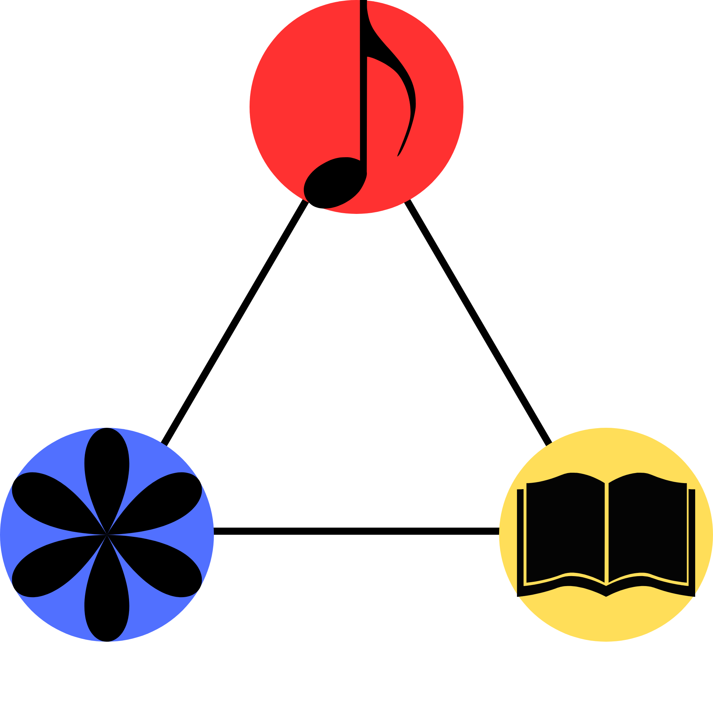
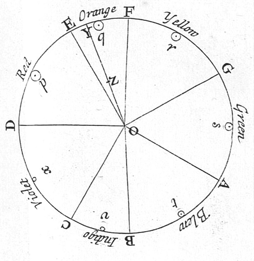
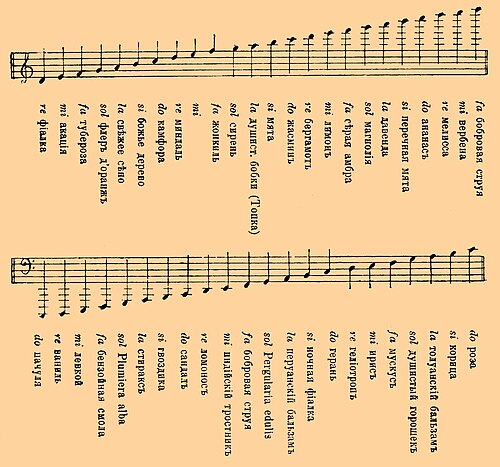
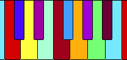
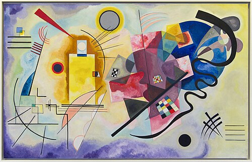
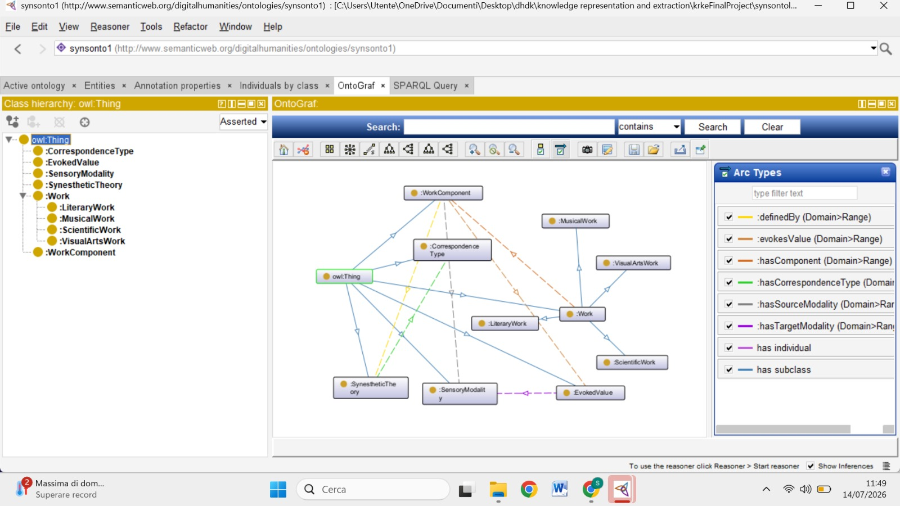
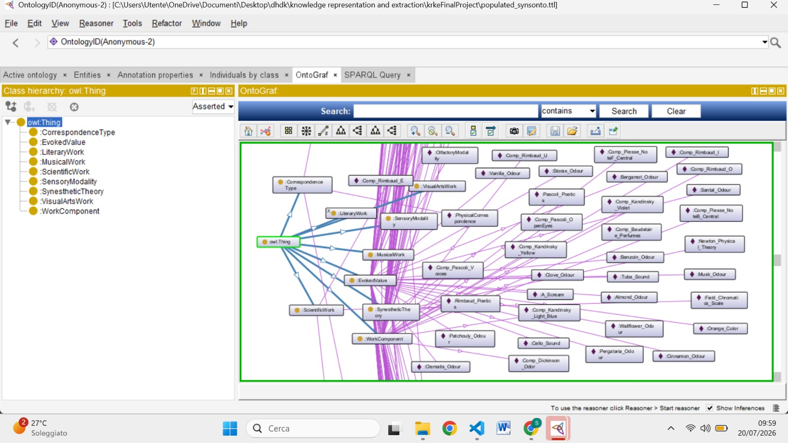

The project is developed for the final exam of Knowledge Representation and Extraction, course taught by Professor Aldo Gangemi within the Master's Degree Program in Digital Humanities and Digital Knowledge (A.A. 2025/2026 - University of Bologna).

The term synesthesia, derived from the Greek syn (together) and aisthesis (sensation), refers to a neurological phenomenon in which the stimulation of one sensory or cognitive pathway leads to involuntary, automatic experiences in a second sensory or cognitive pathway.
This phenomenon is profoundly embedded in human culture and we can find it in diverse domains:
Before delving into the technical architecture of our ontology, the following sections will illustrate some examples, spanning science, music, art and literature, that we have analyzed and utilized to populate our dataset and validate our semantic model.
Historically, the blending of the senses was not merely seen as a subjective artistic experience, but as a potential manifestation of universal physical laws. During the 18th and 19th centuries, several scientists attempted to construct systems to map the relationships between different sensory modalities. In our project, we have integrated three foundational historical systems to populate and validate our ontology: Isaac Newton’s color-music spectrum, George Field’s chromatics, and Septimus Piesse’s odophone system.
In the treatise titled Opticks (1704), Sir Isaac Newton hypothesized a fundamental, physical correspondence between the vibrations of light waves and sound waves. By dividing the visible light spectrum into seven distinct colors, Newton drew a direct mathematical analogy to the seven discrete tones of the musical diatonic scale. Within this physical framework, specific colors were mapped directly to musical notes (e.g., Note D corresponding to Red, Note E to Orange, Note F to Yellow, and so forth). Newton's approach represents an early scientific attempt to unify optics and acoustics under a single harmonic law, treating synesthetic mapping as a measurable phenomenon of the physical world.

The British chemist and color theorist George Field wrote about these cross-modal associations in his works on Chromatography and Chromatics (1817–1835). Unlike Newton's strictly physical wave analogy, Field focused on a perceptual correspondence, exploring how combinations of colors could evoke the same structural harmony as musical chords. He developed a refined chromatic scale where musical notes were mapped to specific colors (such as Note C mapping to Blue, Note D to Purple, and Note E to Red).
In 1857, the chemist and perfumer G.W. Septimus Piesse revolutionized the olfactory arts by publishing The Art of Perfumery, introducing a systematic framework known as the Odophone. Piesse presents a scale of correspondences between sounds and odours, as he was convinced that there is an octave of odours like an octave in music.

Within the domain of musical composition, the integration of sensory modalities found its most profound expression in the early 20th century through the visionary work of the Russian composer and pianist Alexander Scriabin. Scriabin’s most famous synesthetic contribution is documented in his 1910 symphonic work, Prometheus: The Poem of Fire (Op. 60). Scriabin wanted the performance of the symphonic poem Prometheus to be accompanied by the clavier à lumières: an electrophone keyboard instrument that projects a beam of colored light corresponding to each note or harmonic change.

The Russian painter and art theorist Wassily Kandinsky sought to bring music, sound, and rhythm onto the painted canvas. Kandinsky is widely regarded as a pioneer of abstract art, and his entire creative methodology was profoundly dictated by his lived synesthetic experiences, particularly the cross-modal relationship between sight and hearing. In his theoretical treatise, Concerning the Spiritual in Art (1911), Kandinsky articulated that colors and shapes do not merely represent objects in the physical world, but possess an "inner resonance". He believed that a painting should affect the spectator's soul in the same manner that a musical composition affects a listener. Kandinsky attempted to formalize a rigorous correspondence system that linked specific colors with musical instruments:

In the realm of literature, synesthesia transcended the boundaries of a simple rhetorical device or metaphor, becoming the core aesthetic and philosophical foundation of the 19th-century French Symbolist movement. For the Symbolist poets, the human senses were not isolated channels, but interconnected pathways capable of unveiling a deeper, hidden reality. Rather than merely describing the physical world, they used language to trigger cross-modal sensory experiences, blending sight, sound, and smell to evoke profound psychological and emotional states.
The theoretical and poetic manifesto of literary synesthesia is captured in Charles Baudelaire’s foundational sonnet, Correspondances (published in his 1857 masterpiece Les Fleurs du Mal). Baudelaire conceptualized nature as a temple of living pillars where words, sounds, colors, and perfumes merge into a dark and profound unity. Baudelaire’s work introduces a highly sophisticated framework of synesthesia based on emotional and affective correspondences. In the sonnet, he explicitly maps olfactory stimuli to tactile, auditory, and visual perceptions: for example, fresh perfumes are compared to the soft skin of children ("perfumes fresh as a child's flesh"), bridging the olfactory and tactile domains.
While Baudelaire explored the fluid, mystical harmony of the senses, Arthur Rimbaud attempted a more radical and structured codification of literacy synesthesia in his famous 1871 sonnet, Voyelles ("Vowels"). In this poem, Rimbaud subverted the traditional abstract nature of written language by assigning a distinct, vivid color to each vowel of the alphabet, establishing an early literary model of grapheme-color synesthesia. Rimbaud’s explicit alphabetical mapping provides a rigid classification:
Not all synesthetic mappings are built upon the same foundation. We can classify synesthetic relationships into three primary typologies: Structural (or Physical), Perceptual, and Affective.
Structural synesthesia encompasses systems grounded in measurable and mathematical frameworks. In these models, the association between two sensory modalities is not derived from subjective emotion or involuntary hallucination, but is justified by an underlying physical law, proportional analogy, or structural alignment. For example, Sir Isaac Newton’s mapping of optical light wave frequencies to acoustic diatonic scales is a purely structural correspondence.
Perceptual correspondence defines associations that arise from direct sensory or cognitive connections. In these instances, a stimulus in one modality automatically and vividly triggers a sensation in another, operating as an unmediated sensory translation.
Affective synesthesia occurs when the cross-modal link is mediated by a shared emotional valence. In this typology, the stimuli are connected not because they share a physical frequency or a direct neurological trigger, but because they evoke the same internal state.
To constructing SynsOnto we followed these stages (in temporal order):
Work: represents an artistic work or a conceptual/scientific construct subject to synesthetic analysis.
WorkComponent: represents the atomic constituent element of a work of art that acts as a trigger or vehicle for the synesthetic stimulus.
SynestheticTheory: represents the theoretical, poetic, or experimental framework that encodes and justifies cross-modal associations between different sensory modalities.
CorrespondenceType: represents the type of conceptual association (e.g., physical, perceptual, or affective) upon which a specific synesthetic theory is based.
SensoryModality: represents the sensory channel or perceptual modality (e.g., auditory, visual, olfactory) involved in the cross-modal association.
EvokedValue: represents the concept, sensation, or perceived entity that is brought to mind through the synesthetic stimulus.
MusicalWork: subclass of work. It represents an artistic work of a primarily musical or compositional nature (e.g., an opera or a symphony).
LiteraryWork: subclass of work. It represents an artistic work of a textual, poetic, or literary nature (e.g., a sonnet or a poem).
VisualArtsWork: subclass of work. It represents a visual, plastic, or pictorial artistic work (e.g., a painting or a drawing).
ScientificWork: subclass of work. It represents a construct, a theoretical system, or an empirical experiment of a scientific-structural nature.
hasComponent: links a work of art (Work) to the individual atomic elements or parts that constitute it (WorkComponent).
definedBy: associates a work component (WorkComponent) with the synesthetic theory (SynestheticTheory) that governs and explains its association.
hasCorrespondenceType: links a given synesthetic theory (SynestheticTheory) to the intrinsic nature of its correspondence (CorrespondenceType).
hasSourceModality: specifies the starting sensory modality (SensoryModality) inherent to the original stimulus of the artistic component.
hasTargetModality: specifies the destination sensory modality (SensoryModality) toward which the synesthetic association is directed and evoked.
evokesValue: links a work component (WorkComponent) to the specific entity, concept, or sensation (EvokedValue) that is mentally triggered or recalled by the synesthetic phenomenon.
hasPhysicalOrTextualValue: specifies the literal value, textual string, or physical data directly associated with a work component (e.g., a musical key or a poetic verse).
hasPitch: indicates the frequency or musical pitch (e.g., "High"/"Low") identified within the analyzed sound component.
hasBibliographicSource: contains the bibliographic, literary, or documentary reference from which the examined synesthetic theory is derived.

A dataset is crucial for formalizing the ontology data and we chose to do it in a CSV format. This choice was made in order to have already a structure similar to the RDF triples that would be created later, as a file CSV consists of columns and rows.
First, we wrote a Python script that would transform the CSV file into RDFs, in a Turtle format. This is a fundamental procces when creating an ontology, otherwise it is not populated. Here below it is possible to see the result:

We formalized our requests on SPARQL and we used the dedicated tool on Protégé for retrieving the answers.
In this phase of the project we queried the dataset to extract the implicit knowledge. This is a crucial step because it allows us to illustrate the relationships between classes and subclasses, concepts and individuals, how many times a determined event happens, etc. Being able to interact with the dataset is what makes the ontology not only a static graph on paper but also a tool that brings complex and, sometimes, hidden meanings to surface.
We chose seven queries that have different levels of complexity: some of them are more generic, others are more specific.
SynsOnto is a project that developed an ontology that could explained the synesthesia, in all its fields. The first aim was to offer a simple and interactive approach, so that those who do not know anything about synesthesia can still be involved. Synesthesia was the subject of many works by different kind of scholars: from Science to Music, Art, Literature, it is a condition that it's worth talking about.
The analysis was guided by the works of Charles Spence and Nicola Di Stefano (see References). As new theories were encountered we took notes about the authors of that theories, what senses were involved and what elements were evoked. Then, we constructed an ontology that would show these relationships in an automatic way. Thanks to this model, it is clear that synesthesia is common to theorists or scholars that could have nothing to do with each other.
The process of creation followed a linear path: first, reading the articles on the subject, then choosing the most relevant theories. After, formalize this in a correct model, using Protégé, and populate the ontology in a rich dataset. The dataset was subjected to some questions, to bring to life in a more understandable way what is hidden at first sight. We tried to include examples that could have been made by different kind of users, both experts and inexperienced people.
As regards possible future developments, the first thing would be to enrich the dataset with more theories, maybe allowing the scholars to add their own researches directly. Another point is the insertion of AIs: at the moment LLMs are expanding out of all proportion and although they are still trained on explicit knowledge, there is no reason to think that one day, even a very near one, they cannot also manage implicit knowledge. Connected to this, we report the Polanyi project, coordinated by Professor Aldo Gangemi.